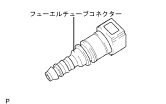
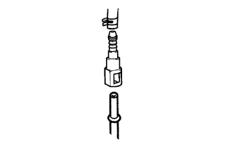
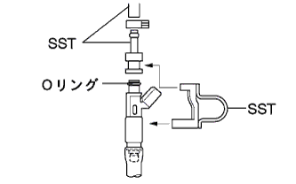
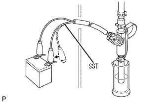

フューエル インジェクタASSY 単体点検 |
| 1. フューエル インジェクタASSY |
抵抗点検
SST(トヨタエレクトリカルテスター)を使用して、インジェクタの端子間の抵抗を測定する。
|  |
噴射量点検
新品のフューエルチューブを用意し、コネクターのみを取りはずす。
|  |
SSTおよびフューエルチューブコネクターをフューエルパイプ(車両側)に接続する。
|  |
インジェクタにOリングを取り付ける。
SSTをインジェクタに組み付ける。
インジェクタをメスシリンダにセットする。
フューエルポンプを作動させる。(要領は参照)
|  |
インジェクタにSSTを接続する。
SSTをバッテリに接続し、燃料噴射(15秒間)を2-3回行い平均値を算出する。
| 噴射量 | 各インジェクタの差 |
|---|---|
| 47-58ml | 11ml以下 |
 |
漏れ点検
上記の状態でSSTをバッテリからはずしたとき、インジェクタから漏れが無いことを確認する。